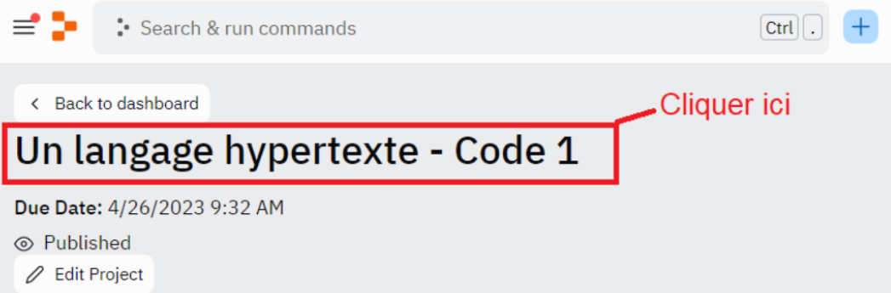

Durée : 1h30
Prérequis : Connaître les bases du HTML/CSS
Environnement de travail : Replit
Vous connaissez plusieurs caractéristiques essentielles de JavaScript. C’est un langage côté client, classé parmi les langages interprétés et qui va de pair avec le standard HTML/CSS. Mais une question se pose : comment intégrer un script JavaScript dans un document HTML ?
On le sait, un script JavaScript peut être intégré dans un code HTML, et va pouvoir, via le Document Object Model (DOM), accéder à une représentation des différents éléments de la page. JavaScript va donc nous permettre de modifier l’agencement des éléments HTML, donc d’ajouter de l’interactivité et du dynamisme aux sites web.
Il existe 2 méthodes permettant d’insérer des scripts JavaScript en utilisant la balise HTML <script>. Il va donc nous falloir utiliser la syntaxe HTML pour insérer un script. La première méthode consiste à directement intégrer le script dans le code HTML. La deuxième méthode revient à écrire notre script dans un fichier .js et à l’intégrer via un lien. L’intégration peut générer des erreurs si elle n’est pas faite au bon endroit dans le code HTML.
Nous ferons en premier lieu un point sur la syntaxe globale de JavaScript, puis nous aborderons ces 2 méthodes d’intégration d’un script JavaScript. Enfin, nous verrons comment intégrer d’une manière conventionnelle les scripts, et comment éviter une erreur liée à l’endroit où nous les intégrons. Prenez donc bien le temps de visualiser et de tester les exemples de codes qui vous permettront de bien assimiler la notion. Vous pourrez aussi visualiser les vidéos qui mettent en image les exemples pris dans ce cours, avec l’IDE Replit.
Pour avoir accès au code et à l'IDE intégré de cette leçon, vous devez :
Une fois ces étapes effectuées, nous vous conseillons de rafraîchir votre navigateur si le code ne s'affiche pas.
En cas de problème, redémarrez votre navigateur et vérifiez que vous avez bien accepté les cookies de connexion nécessaires avant de recommencer la procédure.
En cas de problème, redémarrez votre navigateur et vérifiez que vous avez bien accepté les cookies de connexion nécessaires avant de recommencer la procédure.
Par exemple :
